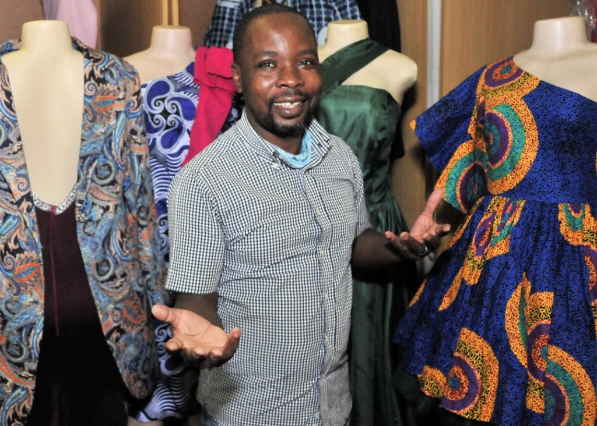
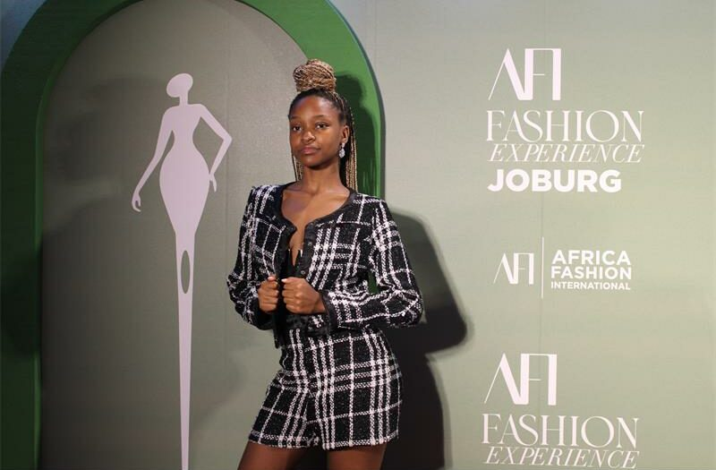

Sam Kekana
Sherly smith
Lukhanyo Mdingi

Nyuku Everywhere is a street fashion brand inspired by urban culture and youthful creativity. Our mission is to bring vibrant, unique, and stylish clothing that reflects the energy of the streets.
We focus on sustainable fashion and aim to inspire conscientious consumers worldwide. Our designs mix bold streetwear styles with ethical production methods.